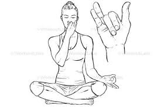

प्राणायाम > नाड़ी शोधन प्राणायाम :

-
नाड़ी शोधन प्राणायाम, जिसे "Alternate Nostril Breathing" भी कहा जाता है, मानसिक शांति और शारीरिक
संतुलन के लिए एक महत्वपूर्ण प्राणायाम तकनीक है।
नाड़ी शोधन प्राणायाम करने की विधि :
- आरंभिक स्थिति: सुखासन या पद्मासन में बैठें और रीढ़ को सीधा रखें।
- हाथ की स्थिति: अपने दाहिने हाथ की अंगुलियों को नाक के ऊपर के पिंपल्स पर रखें।
- सांस लेना: दाहिने नासिका से गहरी सांस लें और बाईं नासिका को बंद करें।
- सांस छोड़ना: अब बाईं नासिका से धीरे-धीरे सांस छोड़ें और दाहिनी नासिका को बंद करें।
- ध्यान केंद्रित करना: इस प्रक्रिया को 5-10 मिनट तक दोहराएं और ध्यान केंद्रित करें।
लाभ :
- नाड़ी शोधन प्राणायाम मानसिक शांति और संतुलन को बढ़ाता है।
- यह श्वास प्रणाली को साफ करता है और तनाव को कम करता है।
Move to top